【SEO案件】自分で作ったデザインをWordplessでコーディングするときによく使うやーつまとめ
最初2019.6.21 更新2019.12.16 okuhara
ここではwordpless投稿画面でのコーディング基礎と、簡単なテンプレを紹介します。個人的な技術備忘録としてたまに追加します。
前提
楽しいデザイン作業が終わると、次は作成したデザインをサイト上に落とし込む楽しい作業です。
SEO担当者からwordpressのログインIPとパスワードを聞き、url欄から改善するサイトのサブディレクトリ(ドメインの下の階層)に「wp-admin」と打ち込み管理者ページに移動しましょう。（例：https://改善するサイト.com/wp-admin）
管理者ページにログインすると、ごちゃごちゃした「ダッシュボード画面」が表示され混乱しますが、まずは落ち着いて左の項目リストから「投稿」か「固定ページ」をクリックしてください。
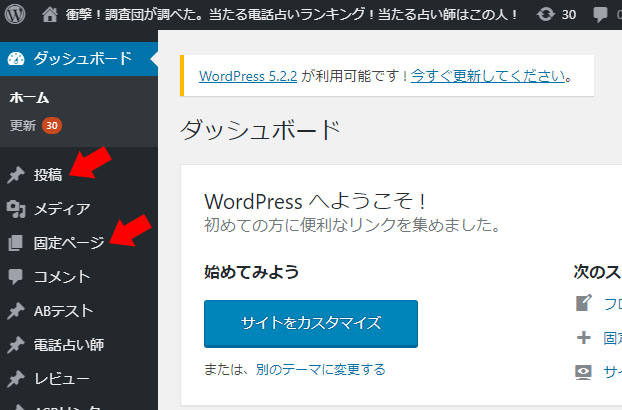すると、さまざまなページの一覧が表示されます。
いきなり本番ページを触って不具合を起こしてしまわないように、仮ページを作って作業環境を作りましょう。
画面上の「新規追加」ボタンをクリックします。
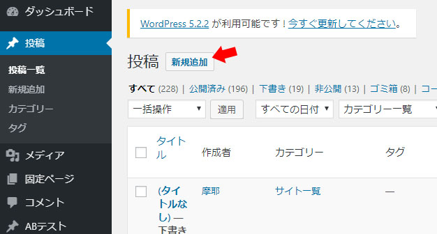すると、ページ編集画面が表示されると思います。
ここに、自分がデザインしたページのhtmlコーディングをしていきます。
まずはタイトルを付けてページを公開しましょう。
そのまま作業しても問題はないのですが、作業中のデータをパブリックのままにするとどんな不具合があるかわかりません。SEO的にも問題があるかもしれません。
右側の公開メニューから、公開状態を「非公開」に設定し、公開ボタンをクリックしましょう。
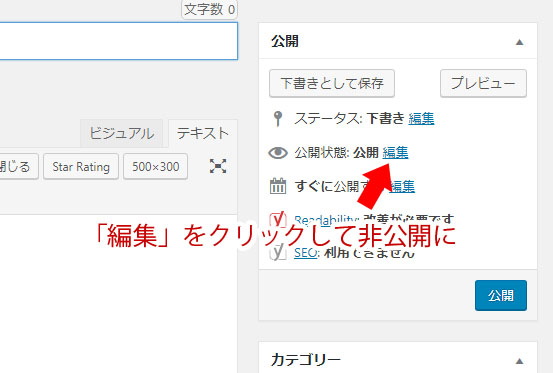これで仮ページの作成が完了です。
編集画面タイトル部分下のパーマリンクが生成されていると思いますので、そこをクリックすれば仮ページが表示されます。
編集ページに書いたものがこのページに反映されます。確認しながら実装していきましょう。
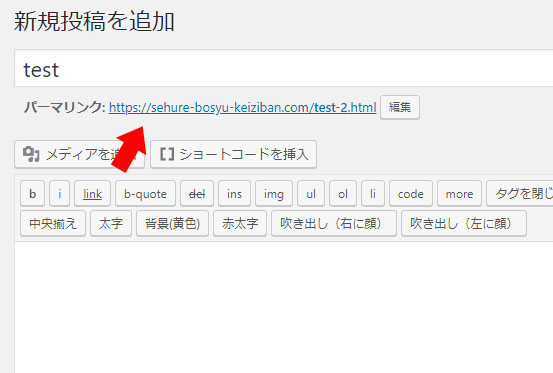これでサイトの骨組みとなるHTMLコードを書くことができます。
つぎに、サイトの装飾であるCSSを書く準備をしましょう。
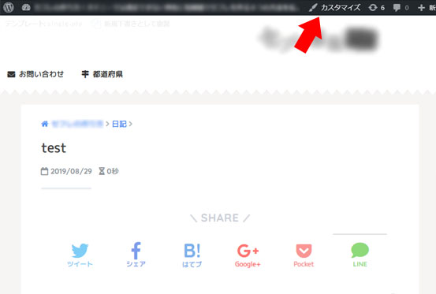さきほど生成されたテストページ上部に表示されている、「カスタマイズ」をクリックしてください。
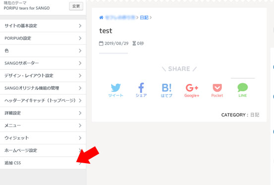カスタマイズ画面が表示されるので、追加CSSという項目をクリックしてください。
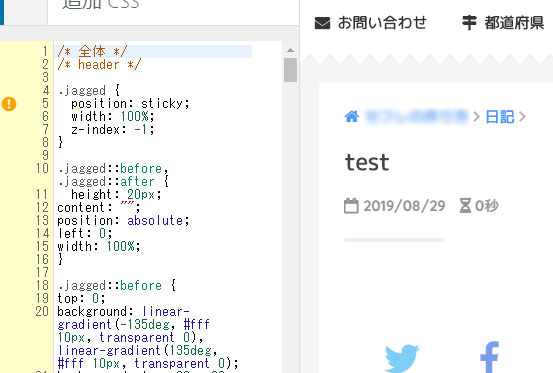ここでリアルタイムでページを確認しながらCSSを記述することができます。
注意してほしいのですが、ここに記述したCSSはサイト全体に反映され、既存のクラスやIDに影響を及ぼすので、テスト実装中や限定的なパーツにスタイルを加えたい場合はユニークなクラス名を付ける必要があります。
これでwordpressでのコーディングの準備はOKです。
コーディング作業は、検証、根気、妥協です。
- 思った通りにデザインが出力されているか何度も検証
- 動かない場合どうして動かないか根気強く調べる
- 技術的に実装は無理だと思ったら見せ方の妥協点を探る
妥協はあまりしたくない！でもwordpressなら安心です！
なぜならwordpress上でのコーディングは特に知識がなくても、調べながら構築すれば大抵どうにかなります。
便利なプラグインもたくさんあるので担当者と相談しながら使っていきましょう！
大まかなことはこのページで説明していきますが、わからないことがあれば聞いてください！
次からはコーディング作業実践編です。
テキストを追加する
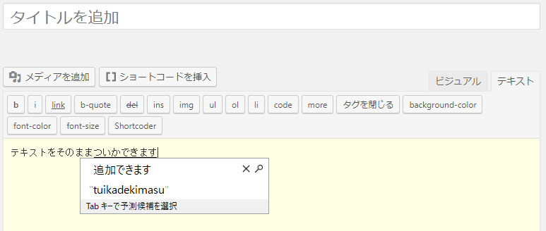SEOで使用しているほとんどのwordpressテーマでは、テキストをそのまま記入することができます。
これはテーマによってpタグとbrタグが自動的に挿入されるためですが、そのかわり複雑なhtmlやcssの組み方をするとレイアウト崩れの原因となります。（特にアコーディオンやflexbox、タブ表記などに起こりやすい）
改行しない、function.phpでpタグの自動挿入を止めるなどの回避方法がありますが、慣れないうちはなるべく簡単な記述で・安全に構築していきましょう。
テキストに効果を付ける
ほとんどのwordpressテーマでは簡単なクラス名を指定するだけで、特に自分でCSSを書くことがなく文字に効果を付けることができます。
たとえば、
無限に広がる<span class="blue b box-yellow underline">大宇宙</span>
と記述した場合、特に自分でCSSを書かなくても、青色、太字、背景黄色、下線と、大宇宙を表現できます。
使用できるクラス名は以下の通りです。※テーマによって異なる場合があります。
文字色
- black → 文字色を黒にする（color : #000 !importantが適用される）
- red → 文字色を黒にする（color : #ff0000 !importantが適用される）
- blue → 文字色を青にする（color : #0000dd !importantが適用される）
- purple → 文字色を紫にする（color : #660099 !importantが適用される）
- yellow → 文字色を黄色にする（color : #ffff00 !importantが適用される）
- green → 文字色を緑にする（color : #008000 !importantが適用される）
- navy → 文字色を紺色にする（color : #1F26A9 !importantが適用される）
- orange → 文字色を橙色にする（color : #ff6600 !importantが適用される）
- pink → 文字色を桃色にする（color : #cc6699 !importantが適用される）
- olive → 文字色を黄土色にする（color : #808000 !importantが適用される）
- lime → 文字色を黄緑にする（color : #00ff00 !importantが適用される）
- aqua → 文字色を水色にする（color : #167FA6 !importantが適用される）
- gray → 文字色を灰色にする（color : #ccc !importantが適用される）
- white → 文字色を白にする（color : #fff !importantが適用される）
下線や取消線
- underline →下線を引く（text-decoration: underline!importantが適用される）
- del →取り消し線を引く（text-decoration: line-throughが適用される）
蛍光ペンのような背景色を入れる
- box-yellow → 背景色を黄色にする
- box-aqua →背景色を水色にする
- box-gray →背景色を灰色にする
- box-red →背景色を赤にする
その他
- b→文字を太くする（font-weight: bold!importantが適用される）
画像を入れる
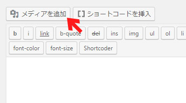wordpressの場合、投稿ページ上部の「メディアを追加」から自由に画像を挿入することができます。
メディアを追加→新規追加・またはドラッグアンドドロップで追加できます。

画像を追加するときは、代替テキスト（alt属性）をきちんと入力しましょう。
alt属性は、検索エンジンロボットに対してどのような画像かを伝えられるので、SEO的に必要な要素です。
また、何らかの理由で画像が表示されない場合、画像の代わりにテキストで表示できます。
なおテキストが書かれていない装飾目的の画像には特にalt属性を入力する必要はありません。
見出しを作る
見出し＝タイトルです。以下のように記述します。
<h1>テキスト</h1>
<h2>テキスト</h2>
<h3>テキスト</h3>
<h4>テキスト</h4>
<h5>テキスト</h5>
<h6>テキスト</h6>
数字が小さくなるにつれて重要度が上がります。
<div class="title">～</div>に適当なCSSを書いて自分でタイトルくらい作れるのでは？と思うと思います。
見出しタグは検索エンジンロボットに対してサイトのコンテンツ構造を伝えられるので、こちらもSEO的に必要な要素です。
この記事では以下のようにH2タイトルを書いています
See the Pen jjyRVo by user (@naisusumeru) on CodePen.
ちなみに見出しタグは、
<h2><img src="～.png" alt="タイトル"></h2>というように、画像を入れることも可能です。
この場合もalt属性を特に忘れずにきちんと書きましょう。
またアイコン付きの見出しについてのテンプレも紹介します。hタグじゃなくても使えるが部分多いと思います。
See the Pen BgZgYo by user (@naisusumeru) on CodePen.
細かな見出しタグのルールは以下のサイトが参考になります
また、CSSで表現できる見出しのデザインは以下が参考になります
ボタンを作る
ボタンは画像で作ることも、またCSSで作ることもできます。
画像の場合は細かいデザインを表現できることが特徴ですが、モバイル端末やPCで表示に差があるため別々に画像を用意しなければならない場合もあります。
CSSの場合は細かなデザインを施すことはできませんが、表示するデバイスによって自動的に表示比率を変えられたり、アニメーションをつけることが可能です。（一部は画像でも可能）
簡単なボタンのHTML/CSSテンプレを作りましたので参考になれば幸いです。
今すぐ使えるボタンテンプレ
See the Pen rEjPLz by user (@naisusumeru) on CodePen.
CSSで表現できるボタンデザイン
ボタンに使えそうなホバーアニメーション
テーブルを作る
比較サイトでのメインコンテンツです。
テーブルを利用すれば、どのデバイス・ブラウザでも同じように表示でき、かつ構築が簡単なので積極的に使用しましょう。
テーブルテンプレ
See the Pen JQExxx by user (@naisusumeru) on CodePen.
テーブルを作成する場合、以下のサイトが便利です。
cssは要編集ですが・・・
リストを作る
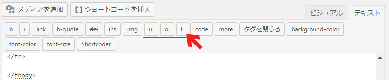wordpress投稿画面ではクイックタグで超簡単にリストを作ることができます。
エディタ上部のul、ol、liボタンをクリックすることでリストタグを即座に挿入することが可能です。
ちなみに、
- ul→番号なしリスト
- ol→番号付きリスト
です。
アコーディオンを作る
プラグインなどでアコーディオンを作ることができますが、有料の場合が多かったり、無料のものは使い勝手が悪いというデメリットがあります。
かといってjsは全然わからないのでとても困りますよね。
そこでWebの先人たちの知恵を借りましょう。jsを使わずCSSだけでアコーディオンを作りたい場合、以下のサイトが便利なので参考にしてください。
https://affirepo.com/stork-customize-accordion/
上記サイトのアコーディオンをチューニングしましたのでこちらも参考にしていただければと思います。
See the Pen KjaLRm by user (@naisusumeru) on CodePen.
ちなみにこのアコーディオンや後述のタブ表示は、wordpressのpタグ・brタグ自動挿入が原因でレイアウトが崩れたり機能しない可能性もあります。
タブを作る
アコーディオン同様jsゼンゼンワカラナダカラjsを使わずcssのみで作るタブ切り替えを実装していきます。
探せばいろいろあるのですが、下記サイトのタブの使用が最も軽く、かつラベルに複数行の入力が可能なのでとても便利です。
https://boel.jp/tips/vol86_tabselect.html
以前使用したもので分かりやすいサンプルがありますのでこちらも参考になれば
See the Pen MMpgMV by user (@naisusumeru) on CodePen.
全体の簡単なテンプレート
wordpressで真っ白な固定ページや記事ページの新規投稿画面で泣く前に、構成の簡単なHTML/CSSのテンプレをまとめます。
たとえば、このページでは以下のようにシンプルなレイアウトで書かれています。
- //たとえばここに普通の記事が入る場合
- <div class="section">
- <h2>ここに見出しのタイトルが入ります</h2>
- テキストが入りますテキストが入ります
- テキストが入りますテキストが入ります
- <h3>ここに見出しのタイトルが入ります</h3>
- テキストが入りますテキストが入ります
- テキストが入りますテキストが入ります
- </div>
- //たとえばここに比較テーブルが入る場合
- <div class="hikaku">
- <table>
- <tbody>
- <tr>
- <th>比較対象A</th>
- <th>比較対象B</th>
- </tr>
- <tr>
- <td>比較項目</td>
- <td>比較項目</td>
- </tr>
- </tbody>
- </table>
- </div>
ここに画像を挿入したりしていけばオッケーです
そのままでもテーマ通りのデザインCSSで出力されますが、自分で書いていけばデザイン案通りのページを目指せます。
続いて、このページで設定しているCSSです。
- body {/* ページ全体のスタイル */
- background: #eee;/* 全体の背景色 */
- font-family: Verdana,'メイリオ','ＭＳ Ｐゴシック',sans-serif;/* 全体のフォント */
- font-size: 16px;/* 全体のフォントサイズ */
- }
- .wrapper {/* コンテンツのスタイル */
- max-width: 720px;/* コンテンツ最大幅。720px以上の幅にはならない。 */
- margin: 0 auto;/* 全体に対してコンテンツの空間幅。上下に0、左右はautoで自動的に中央寄せしている */
- background: #fff;/* コンテンツの背景色 */
- }
- /* SEO案件だとあらかじめ設定されていることが多く、既存の固定ページ・記事ページにも影響を及ぼすのでbody,wrapperを触ることはあまりないと思います。 */
- .section {/* divクラス「section」のスタイル */
- margin: 0 auto 4em;/* .wrapperに対しての空間幅。上0、左右auto、下46px */
- }
- .section img {/* divクラス「section」内の画像のスタイル */
- max-width: 100%;/* 親要素（section）に対しての画像幅 */
- border: solid 1px #ddd;/* 画像枠線。solid（実線）で1pxの#ddd色の線。solid部分値をdottedでドット線、dashedでダッシュ線になります。 */
- box-sizing: border-box;/* 画像のpaddingとborderを親要素（section）の高さ・幅に含める。なんか知らんけど画像が要素からはみ出る！とかの場合に有効です。 */
- }
- .section h2 {/* divクラス「section」内のH2のスタイル */
- background: #eaf5fb;/* h2の背景 */
- padding: 10px;/* h2の高さ・幅に対してコンテンツ内までの空間幅。上下左右に10pxずつ。 */
- border-left: 4px solid #00a0e9;/* 左側にのみボーダーを設定。rightで右側、topで上側、bottomで下側に設定できる。 */
- }
- .section h3 {/* divクラス「section」内のH3のスタイル */
- border-bottom: 1px dashed #00a0e9;/* h3下部にダッシュ線 */
- } …ほか
PCとスマホで見た目を変える
メディアクエリを使いましょう。便利です。
たとへば、以下のようなHTMLで作られた要素があるとします。
- <div class="buttonlist">
- <a href="#url1" class="button01">ここに見出しのタイトルが入ります</a>
- <a href="#url1" class="button01">ここに見出しのタイトルが入ります</a>
- </div>
このbuttonlistで囲まれたbutton01とbutton02を、「PCでは横並び、スマホでは縦並び」にしたい場合、メディアクエリを使えば簡単に画面幅によって見た目を変えられます。
- /* 細かいCSSは省略 */
- .button01{
- float: left;
- }
- .button02{
- float: right;
- }
- @media screen and (max-width: 720px){
- .button01, .button02{
- float: none;
- }
- }
通常はfloatで横並びにして置き、画面幅720px以下だとfloatが解除され縦並びになるという寸法です。
これだけではわかりづらいので以下のようになります。CODEPEN右下の表示倍率を1xと0.25xを切り替えてみると画面幅で表示が異なっていることが分かると思います。
メディアクエリを使った表示の切り替え
See the Pen PraYbg by user (@naisusumeru) on CodePen.
このメディアクエリを使用することで、PCとスマホで異なる画像を表示することもできます。
この横並びのボタンのCSSですがdisplay:flexを使った方が簡単なのでそちらも試してみてください。メディアクエリ使う必要がありません。
横並びの表示をflexboxで簡単に切り替える
See the Pen rNBjwvZ by user (@naisusumeru) on CodePen.
flexboxについては以下のページが参考になります。
日本語対応！CSS Flexboxのチートシートを作ったので配布します | Webクリエイターボックス
flexboxですがたまにバグります。バグった時の対処法も以下に紹介されています。
吹き出しを作る
対談形式や管理人のレビュー形式など、さまざまな場面で使えるアコーディオンです。
画像とテキスト部分をfloatで横並びにし、テキスト部分に疑似要素で三角をつけることで吹き出し風の表現をすることが可能になります。
左からの吹き出し
See the Pen eYOgRdV by user (@naisusumeru) on CodePen.
右からの吹き出し
See the Pen NWKdgap by user (@naisusumeru) on CodePen.
アニメーションをつける
Shortcode Ultimateプラグインを使用すれば、複雑な設定を行うことなく簡単にアニメーション機能を使用することが可能です。
Shortcode Ultimateプラグインがインストールされている場合、記事投稿ページ上部の「[]ショートコードを挿入」というボタンがあるので、そこをクリックしてください。
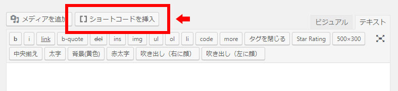便利なショートコードの一覧が表示されるので、その中からアニメーションをクリックしてアニメーションショートコードを挿入します
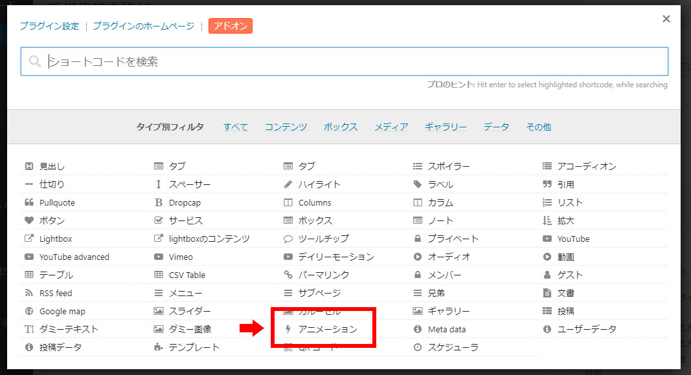アニメーションの設定画面が表示されます。アニメーションの種類については
設定が完了し、ショートコードを挿入ボタンをクリックします。
挿入されたショートコード[su_animate type="アニメーションの種類" delay="表示されるまでの時間"]と閉じタグ[/su_animate]で、アニメーションを付加させたい要素を囲んであげれば完了です。
非常に簡単にアニメーションを追加することができますが、アニメーションのスタイルなどが追加されるので表示崩れが起きる可能性もあります。リストli要素などにアニメーションを付加させると確実にリストが崩れます。
また、上で紹介したアコーディオンはアコーディオンのボタンが表示された瞬間にアニメーションが動作するため、アコーディオンを開いてもアニメーションは動作済みの状態になります。
表示を確認しながら実装していきましょう。
複数の画像に同一の額縁を付ける
positionプロパティを使用します。
画像と、画像にかぶせる額縁の画像は同サイズにしてください。サイズがちがうとずれます。
See the Pen eYmBOwv by user (@naisusumeru) on CodePen.
こういう感じです。
項目を固定してスクロールできるテーブルを作る
ここに詳細があるのですが、解説がなく読みづらいので
縦と横の解説をcodepenに記載しました。
See the Pen ZEGEPMM by user (@naisusumeru) on CodePen.
見づらいと思うので、右上のEDIT ON CODEPENをクリックすれば全容が確認できます。
用途に応じて、縦横いずれかのpotion:stickyを削除してください。
故障かな？と思ったら
- CSSどこに書くの！
-
Wordpress管理画面の「外観」→「カスタマイズ」→「追加CSS」から入力可能です。ログインしていれば、任意のページから追加CSSを入力することができ、リアルタイムで反映されます。また、「外観」→「テーマエディター」からも入力可能です。
- 書いたCSSが反映されないんだけど？
-
1.指定したクラス名、プロパティ、値が間違っている。2.適切でないプロパティor値を指定している。3.セミコロン（;）、波括弧（｝）の書き忘れ。4.テーマで使用している既存のCSSや、別のCSSと競合している…などが考えられます。
1・2・3の場合は正しいクラス名やCSSプロパティに直すことで問題なく動くかもしれません。コードを見直してみましょう。
4の場合は競合するCSSが指定されているかもしれません。webブラウザの開発者ツールで他のCSSが競合していないか確認してみましょう。テーマで指定されている場合、自分で書いたCSSの優先順位を上げましょう。例えば、
.section aで指定されている場合、 .section .button aと、より詳しく指定するとCSSの優先順位が上がります。
また、color:#ff0000 !important;のように、優先順位を上げたい値の末尾に!importantと書くとそちらが優先されます。
- 投稿と固定ページって何が違うの？
-
投稿はいわゆる「記事ページ」です。
サイトの特定カテゴリーに属したページで、サイトの趣旨の特定のテーマに沿ったページの改善をする際に作業することが多いと思います。
記事ページの改善が依頼されるパターンとしては「〇〇というサイトの××というページが上がってきているからクリック率向上のためにデザイン良くして！」というタイプが多いと思います。
記事ページの改善提案をする際にこちらを選びましょう。
投稿ページの特性として、すべてのテンプレートがsingle.phpというひとつのphpで管理されているため、「このページだけヘッダーとか背景のデザインを変えたい！」という場合には向きません。
固定ページは、カテゴリーとの紐付けやトップページとの連動のない独立したページです。
トップページの改善をする際にここで作業をすることが多いと思います。固定ページの改善が依頼されるパターンとしては「〇〇というサイトが上がってきているんだけどいまいち効果ない！デザイン良くして！」とか「新規でこういうページを作りたいんだけどトップページデザインしてくれない？」など、さまざまです。
トップページの改善提案をする際にこちらを選びましょう。
固定ページは、テンプレートを別個で割り当てることができるので、自由にレイアウトやデザインを変えることができます。
- サイドカラムが消えた！or下に落ちた！
-
divの閉じわすれや、余計な/divはありませんか？
こちらも開発者ツールから探すことができます。
- jQuery使いたい！どこに書くの？
-
header.phpのwp_head();の下に書いてください。
例外はありますが管理画面からは更新できないことが多いので、FTPクライアントの導入が必須です。phpファイルをそのまま触るので、最悪サイトが壊れます。バックアップ必須です。
- pタグとbrタグの自動挿入うざい！
-
1.慣れる 2.function.phpを書き換えるの二つの方法があります。
function.phpへ下記リンクを参考にコードを書き加えることで、自動挿入停止のカスタムフィールドを作ることができます。
[WordPress]この記事だけでいい！特定の記事、固定ページだけでHTMLの自動整形を無効化する方法
でも、慣れたほうが早くて楽です。